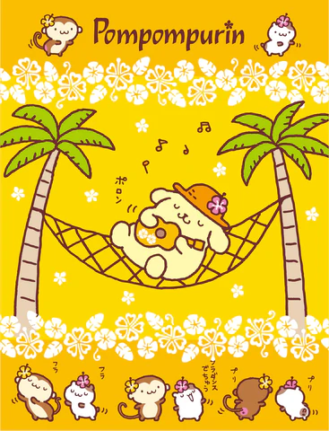
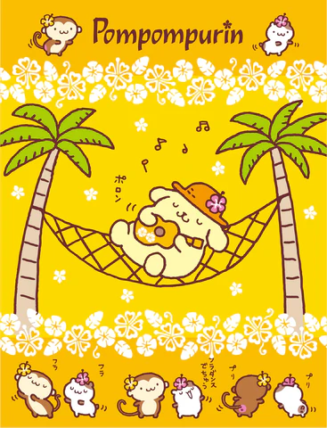
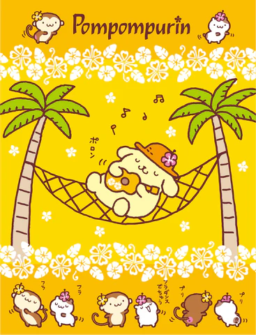

(click for music .áŸ.០♬⋆.Ëš)
╰┈⤠Pompompurin is an adorable yellow dog who sports a brown beret
╰┈⤠He was released in 1996
╰┈⤠He used to be named My Pudding
╰┈⤠He won Sanrio's 2025 popularity contest
╰┈⤠He lives in a basket in front of a little girl's house
╰┈⤠His favourite food is cream caramel pudding
╰┈⤠He enjoys collecting shoes
╰┈⤠He has a variety of hobbies
╰┈⤠He has three best friends: Muffin, Scone, and Bagel
